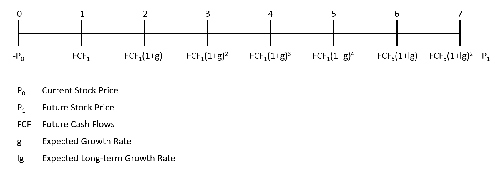

Apple Stock Valuation
Cheryl Isabella
Assumptions:
- Assume Apple uses a cost of equity, i.e. 𝑟𝑒 , of 5.50 percent and an after-tax weighted average cost of capital of 9.50 percent, i.e. 𝑟𝑤𝑎𝑐𝑐.
- The expected return on new investments is 4.00 percent.
Data
# income statement
income <- data.frame(cbind(year, total_revenue, EBIT, pretax_income, tax_provision))
income# balance sheet
balance <- mutate(balance1, NWC = current_assets - current_liabilities)
balance# cash flow statement
cashflow <- as.data.frame(cbind(year, depreciation))
cashflowDivident-Discount Model
a) Timeline

b) Dividend Forcast
year_ddm <- c(0, 1, 2, 3, 4, 5)
div_fc <- c(Div, Div*(1+g), Div*(1+g)^2, Div*(1+g)^3, Div*(1+g)^4, Div*(1+g)^5)
div_forecast <- as.data.frame(cbind(year = year_ddm, div_fc))
div_forecastc) Long-term Growth Rate
\[g = (1-PayoutRatio) * ReturnOnNewInvestment\]
new_g <- (1-payout) * exp_ret
new_g## [1] 0.032664d) Stock Price Year Five
\[P_5 = \frac{Div_6}{r_e-g} \]
r <- 0.055
Div6 <- div_forecast[6,2] * (1 + new_g)
P5 <- Div6 / (r-new_g)
round(P5, 2)## [1] 89.01e) Current Stock Price
\[P_0 = \frac{Div_1}{1+r_e} + \frac{Div_2}{(1+r_e)^2} + \frac{Div_3}{(1+r_e)^3} + \frac{Div_4}{(1+r_e)^4} + \frac{Div_5}{(1+r_e)^5} + \frac{P_5}{(1+r_e)^5} \]
P0_DDM <- (div_forecast[2,2] / 1+r) + (div_forecast[3,2] / (1+r)^2) + (div_forecast[4,2] / (1+r)^3) + (div_forecast[5,2] / (1+r)^4) + (div_forecast[6,2] / (1+r)^5) + (P5 / (1+r)^5)
round(P0_DDM, 2)## [1] 74.27Discounted Free Cash Flow Model
a) Ratios
- The average for years 2018, 2019 and 2020 are used.
ratios <- income %>%
mutate(EBIT_margin = EBIT / total_revenue,
tax_rate = tax_provision / pretax_income,
PPE_Sales = balance$PPE / total_revenue,
deprec_PPE = cashflow$depreciation / balance$PPE,
wc_sales = balance$NWC / total_revenue) %>%
summarise(avg_EBIT_margin = mean(EBIT_margin),
avg_tax_rate = mean(tax_rate),
avg_PPE_Sales = mean(PPE_Sales),
avg_deprec_PPE = mean(deprec_PPE),
avg_wc_sales = mean(wc_sales))
ratiosb) Timeline

c) Revenue Forcast
#revenues of 2020
revenue2020 <- as.numeric(income %>% filter(year == "2020") %>% select(total_revenue))
revenue_y5 <- revenue2020*(1+g)^5
year_dfc <- c(0, 1, 2, 3, 4, 5, 6, 7)
growth_factor <- c(1, (1+g), (1+g), (1+g), (1+g), (1+g), (1+new_g), (1+new_g))
revenue_fc <- c(revenue2020, revenue2020*(1+g), revenue2020*(1+g)^2, revenue2020*(1+g)^3, revenue2020*(1+g)^4, revenue_y5, revenue_y5*(1+new_g), revenue_y5*(1+new_g)^2)
forecast_rev <- as.data.frame(cbind(year = year_dfc, growth_factor, revenue_fc))
forecast_revd) EBIT, PPE, Depreciation & NWC Forecast
forecast_dcf <- mutate(forecast_rev, EBIT_fc = ratios$avg_EBIT_margin * revenue_fc,
PPE_fc = ratios$avg_PPE_Sales * revenue_fc,
NWC_fc = ratios$avg_wc_sales * revenue_fc,
depreciation_fc = ratios$avg_deprec_PPE * PPE_fc)
forecast_dcfe) Free Cash Flow Forecast
\[FCF_t = EBIT * (1-𝜏_c) + Depreciation - CAPEX - (NWC_t - NWC_{t-1}) \]
FCF_forecast <- mutate(forecast_dcf, CAPEX = PPE_fc - lag(PPE_fc),
NWC_change = NWC_fc - lag(NWC_fc),
FCF = EBIT_fc * (1- ratios$avg_tax_rate) + depreciation_fc - CAPEX - NWC_change)
FCF_forecast[-1,c(1,10)]f) Horizon Enterprise Value Year Seven
\[V_7 = \frac{FCF_8}{r_{wacc}-g} = \frac{FCF_7*(1+g)}{r_{wacc}-g}\]
r_wacc <- 0.095
FCF7 <- as.numeric(filter(FCF_forecast, year == "7") %>% select(FCF))
V7 <- (FCF7 * (1 + new_g)) / (r_wacc - new_g)
V7## [1] 2.758429e+12g) Enterprise Value
\[V_0 = \frac{FCF_1}{1+r_{wacc}} + \frac{FCF_2}{(1+r_{wacc})^2} + \frac{FCF_3}{(1+r_{wacc})^3} + \frac{FCF_4}{(1+r_{wacc})^4} + \frac{FCF_5}{(1+r_{wacc})^5} + \frac{FCF_6}{(1+r_{wacc})^6} + \frac{FCF_7+V_7}{(1+r_{wacc})^7}\]
V0 <- FCF_forecast[2,10]/(1+r_wacc) + FCF_forecast[3,10]/(1+r_wacc)^2 + FCF_forecast[4,10]/(1+r_wacc)^3 + FCF_forecast[5,10]/(1+r_wacc)^4 + FCF_forecast[6,10]/(1+r_wacc)^5 + FCF_forecast[7,10]/(1+r_wacc)^6 + (FCF_forecast[8,10] + V7)/(1+r_wacc)^7
V0## [1] 2.026078e+12h) Current Stock Price
\[P_0 = \frac{EnterpriseValue_0 + Cash_0 - Debt_0}{Shares Outstanding}\]
cash2020 <- balance[1,6]
debt2020 <- balance[1,5]
P0_DCF <- (V0 + cash2020 - debt2020) / shares
round(P0_DCF, 2)## [1] 116.24Interpretation of the Results
- Stock price calculated by dividend discount model: $74.27
- Stock price calculated by discounted free cash flow model: $116.24
- The current stock price: $131.46
The results show that the stock price calculated using the dividend
discount model and discounted free cash flow model is lower than the
current stock price. This implies that the Apple stock is overvalued
(current price > calculated prices). Therefore, the current stock
price is not justified by the prospected dividends and free cash flows.
In addition, it is more likely that there will be a correction of the
stock. Based on our calculations, it is recommended that investors
should sell the Apple stock.
Differences in Stock Prices and Assumptions
The DDM model is based on the forecast of future dividends payments to the shareholders. Unfortunately, these forecasts are based on assumptions and have great uncertainty. Firstly, the model is very sensitive to the dividend growth rate, which is assumed to stay constant. Secondly, forecasting the future dividends also means forecasting future earnings, dividend payout rate and future share count. Thirdly, the earnings depend on the interest expenses, the payout rate, on whether the firm repurchases shares or not. Lastly, many of these are decisions made by the management team which are challenging to forecast. It is also assumed that the return on new investment does not change in time.
The DCF model focuses on the total value of the firm to equity and debt holders by calculating the present value of the prospected free cash flow. The advantage of the DFC is that we do not need to forecast dividends, share repurchases, or the use of debt to calculate the value of a firm. Unfortunately, in the DCF model, the free cash flow forecast also depends greatly on the growth rate. It is assumed that the growth rate stays constant for the first five years and then change to a constant long-term growth rate for the following years. Note that the free cash flow will be paid to debt and equity holders, so the weighted average cost of capital has to be used.
As aforementioned, the price returned by my models is significantly lower than the actual stock price. This is because the models only include a certain number of factors. Investors are also able to evaluate a stock by non-financial measures. Such can be the reputation of a firm, the quality of their management team, prospected R&D successes and much more. Many positive factors can raise the stock price and hence differ from the model calculations. Especially Apple is has a decent reputation and is known for its successes in the past. Hence, many investors are still willing to buy an overvalued stock at a premium.